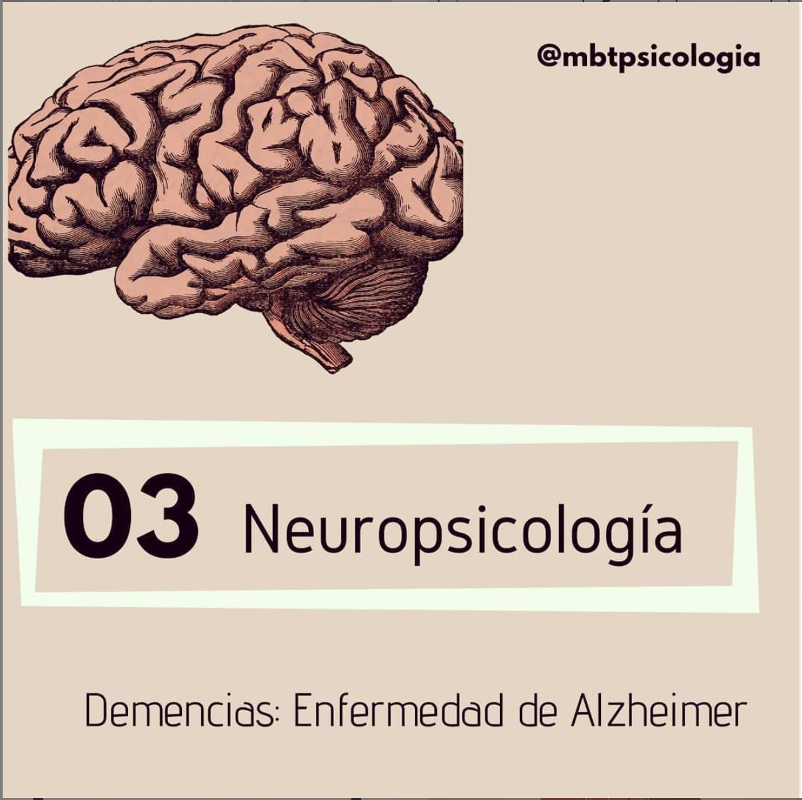

ü߆ ENFERMEDAD DE ALZHEIMER (EA)

Antes de explocar un poco qué es la EA, es imprescindible hablar de DEMENCIAS en general. Con frecuencia se emplea como sinónimo el término demencia con Alzheimer (demencia senil es un diagnóstico en desuso). Si bien es cierto que un 70% de las demencias son por EA, debemos entender qué son.
üö©Las demencias hacen referencia a un S√çNDROME ADQUIRIDO (no se nace con √©l), formado por una serie de procesos de origen cerebral, de car√°cter degenerativo y habitualmente progresivo, consecuencia de una variada etiolog√≠a, esto es, diferentes causas. Est√°n relacionadas √≠ntimamente con la edad, aumentando su porcentaje de aparici√≥n hasta un 20% en mayores de 80 a√±os. .
➡️De este modo, DEMENCIA es el SÍNDROME consecuencia de un proceso neurodegenerativo, como puede ser la EA, pero hay muchas enfermedades que también llevan asociada la aparición de demencia (por ejemplo, enfermedad de Parkinson, Enfermedad por Cuerpos de Lewy, Enfermedad de Pick).
üî∏Ahora s√≠, ENFERMEDAD DE ALZHEIMER. Se caracteriza por la P√âRDIDA DE MEMORIA y al menos otra funci√≥n cognitiva (lenguaje, praxias, gnosias, funciones ejecutivas), as√≠ como una serie de S√çNTOMAS NO COGNITIVOS, entre los que destacar√≠an los de tipo psic√≥tico (delirios, alucinaciones) o depresivo y los trastornos del comportamiento (deambulaci√≥n, agresividad).
üîπTiene un comienzo LENTO y es PROGRESIVA. Al principio la persona y su entorno pueden notar peque√±as p√©rdidas de memoria y despistes cotidianos que ir√°n yendo a m√°s con el tiempo.
üî∏Como causa de la enfermedad, hablamos de dos signos caracter√≠sticos: las denominadas PLACAS AMILOIDES (dep√≥sitos prote√≠na beta-amiloide en la sustancia gris del cerebro) y la presencia de OVILLOS NEUROFIBRILARES (polimerizaci√≥n anormal de la prote√≠na tau, que se inicia en el hipocampo).
üîπPara su diagn√≥stico se emplean t√©cnicas como la historia cl√≠nica, la exploraci√≥n f√≠sica y neurol√≥gica, la entrevista con un familiar y una VALORACI√ìN NEUROPSICOL√ìGICA en profundidad para determinar qu√© funciones cognitivas est√°n afectadas y preservadasüìù.
El diagnóstico se hace, por tanto, mediante el diagnóstico clínico y el descarte de otras demencias, aunque la confirmación al 100% sigue siendo postmortem todavía cuando se advierte la presencia de los nudos y placas antes nombrados.
üö©La INTERVENCI√ìN PRECOZ es clave y s√∫per importante para ralentizar su avance, as√≠ como el acompa√±amiento y atenci√≥n al entorno de la persona, proporcionando estrategias y herramientas para manejar la enfermedad. La aparici√≥n del s√≠ndrome del cuidador (Burnout) es muy com√∫n en cuidadores familiares de personas con Alzheimer.

üö©Las demencias hacen referencia a un S√çNDROME ADQUIRIDO (no se nace con √©l), formado por una serie de procesos de origen cerebral, de car√°cter degenerativo y habitualmente progresivo, consecuencia de una variada etiolog√≠a, esto es, diferentes causas. Est√°n relacionadas √≠ntimamente con la edad, aumentando su porcentaje de aparici√≥n hasta un 20% en mayores de 80 a√±os. .
➡️De este modo, DEMENCIA es el SÍNDROME consecuencia de un proceso neurodegenerativo, como puede ser la EA, pero hay muchas enfermedades que también llevan asociada la aparición de demencia (por ejemplo, enfermedad de Parkinson, Enfermedad por Cuerpos de Lewy, Enfermedad de Pick).
üî∏Ahora s√≠, ENFERMEDAD DE ALZHEIMER. Se caracteriza por la P√âRDIDA DE MEMORIA y al menos otra funci√≥n cognitiva (lenguaje, praxias, gnosias, funciones ejecutivas), as√≠ como una serie de S√çNTOMAS NO COGNITIVOS, entre los que destacar√≠an los de tipo psic√≥tico (delirios, alucinaciones) o depresivo y los trastornos del comportamiento (deambulaci√≥n, agresividad).
üîπTiene un comienzo LENTO y es PROGRESIVA. Al principio la persona y su entorno pueden notar peque√±as p√©rdidas de memoria y despistes cotidianos que ir√°n yendo a m√°s con el tiempo.
üî∏Como causa de la enfermedad, hablamos de dos signos caracter√≠sticos: las denominadas PLACAS AMILOIDES (dep√≥sitos prote√≠na beta-amiloide en la sustancia gris del cerebro) y la presencia de OVILLOS NEUROFIBRILARES (polimerizaci√≥n anormal de la prote√≠na tau, que se inicia en el hipocampo).
üîπPara su diagn√≥stico se emplean t√©cnicas como la historia cl√≠nica, la exploraci√≥n f√≠sica y neurol√≥gica, la entrevista con un familiar y una VALORACI√ìN NEUROPSICOL√ìGICA en profundidad para determinar qu√© funciones cognitivas est√°n afectadas y preservadasüìù.
El diagnóstico se hace, por tanto, mediante el diagnóstico clínico y el descarte de otras demencias, aunque la confirmación al 100% sigue siendo postmortem todavía cuando se advierte la presencia de los nudos y placas antes nombrados.
üö©La INTERVENCI√ìN PRECOZ es clave y s√∫per importante para ralentizar su avance, as√≠ como el acompa√±amiento y atenci√≥n al entorno de la persona, proporcionando estrategias y herramientas para manejar la enfermedad. La aparici√≥n del s√≠ndrome del cuidador (Burnout) es muy com√∫n en cuidadores familiares de personas con Alzheimer.